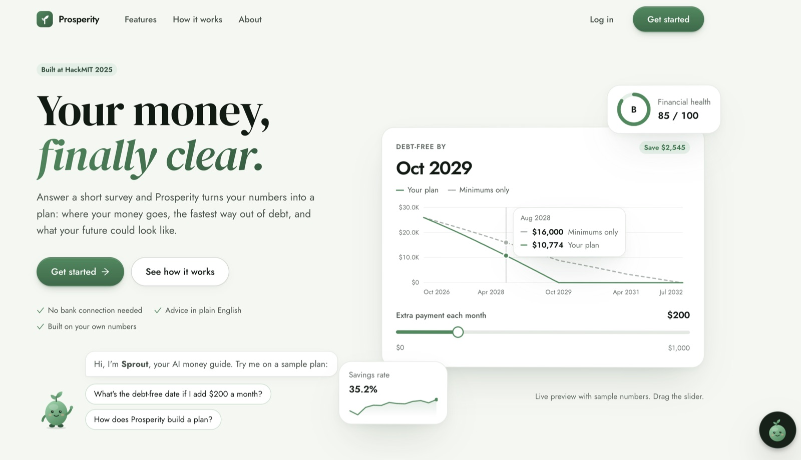
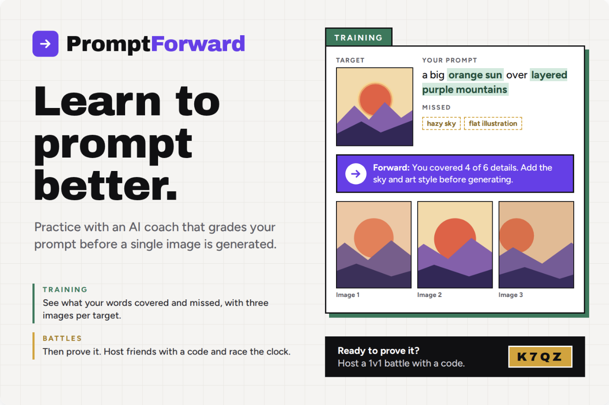
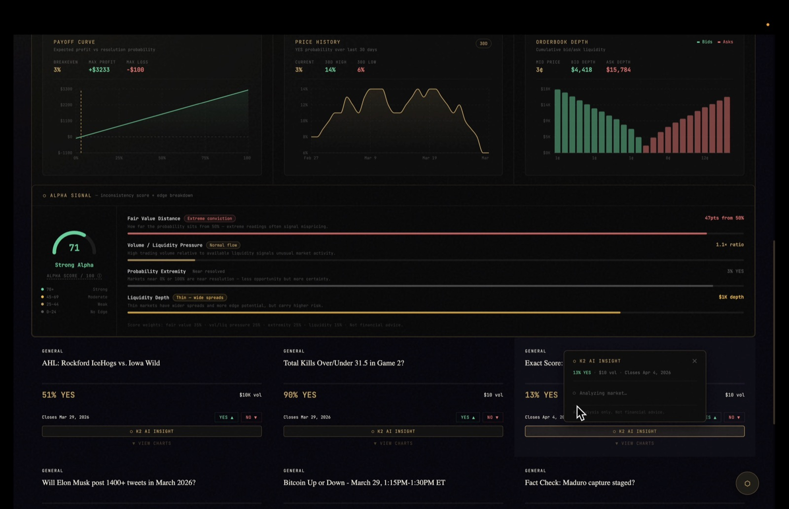
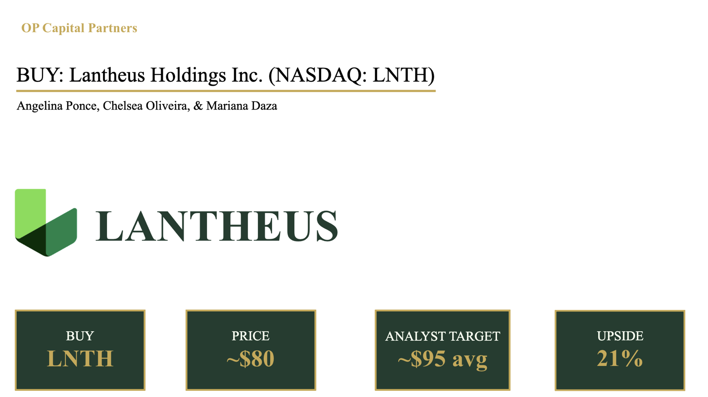
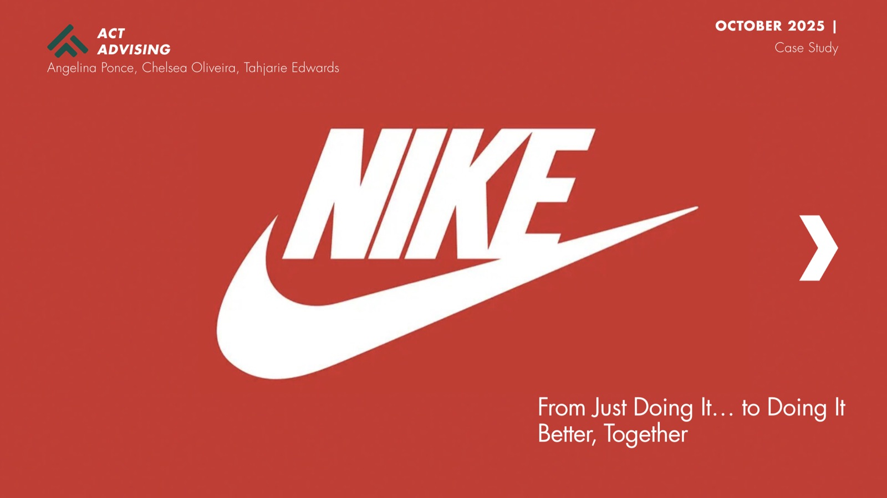
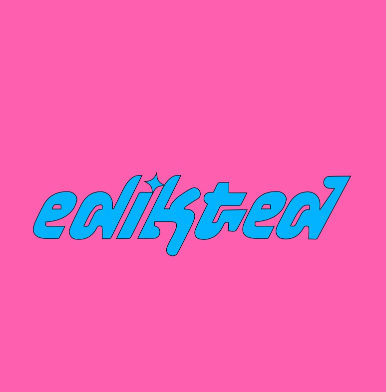

Angelina
Ponce
Private Equity Summer Analyst · Asset Management Summer Analyst · Co-Founder and President, StackHacks
Senior at Binghamton University bridging finance and technology, from PE deal pipelines to large-scale engineering organizations. Passionate about AI and early-stage startups. Curious by nature, relentless in execution.
Analytical rigor meets
entrepreneurial drive
I'm a senior at Binghamton University pursuing Economics with minors in Data Analytics and Computer Science, a combination that lets me move fluidly between the trading floor and the terminal. My perspective sits at the rare intersection of financial analysis and technical execution.
During my Private Equity Summer Analyst role at GTIS Partners, I organized deal pipelines with Opportunity Zone classifications and conducted comprehensive Microsoft licensing analysis across 20+ portfolio companies, projecting 15% cost savings through enterprise agreement optimization. I was mentored by senior leaders including the Head of Asset Management and Head of Investor Relations.
As Co-Founder and President of StackHacks, I've built a student-run software engineering organization from the ground up, launched four specialized project tracks, and developed an internship program from scratch, all while recruiting, managing an executive board, and forging university partnerships.
Building expertise
at the frontier
Asset Management Summer Analyst
Community Preservation Corporation
New York, NY
- Monitored a $353M portfolio of 10,000+ units in CPC's residential real estate non-agency sector, conducting rigorous monthly DSCR analysis and watchlist tracking to proactively flag at-risk loans and support credit risk mitigation efforts
- Supported asset management for CPC's $5.9B Community Stabilization Partners portfolio, contributing to compliance reviews and property inspections across 35,000+ rent-regulated units while liaising with borrowers and ensuring investor satisfaction
Private Equity Summer Analyst
GTIS Partners
New York, NY
- Organized and categorized deal pipeline with Opportunity Zone classifications to streamline investment sourcing and enhance portfolio diversification strategies
- Conducted comprehensive Microsoft licensing analysis across GTIS in collaboration with vendors, optimizing enterprise agreements and projecting approximately 15% cost savings
- Mentored by 10+ senior leaders, including Head of Asset Management, Head of Investor Relations, and Head of Fund Finance on analytical methodologies and workflow optimization
Co-Founder & President
StackHacks
Binghamton University
- Scaled software engineering organization through strategic recruitment and engagement initiatives, achieving 600% membership growth
- Manage 10-member executive board and oversee four project tracks (AI, Cybersecurity, Web Dev, Recreating Apps), coordinating deliverables and mentoring development
- Partner with COO, CIO, and CTO to manage Spring 2026 internship program including structured mentorship, technical interviews, and cross-functional team placements
- Coordinate technical workshops, networking events, and faculty/alumni partnerships to expand campus presence and professional development opportunities
Real problems,
quantified results

Prosperity
Full-stack financial planning platform built in 24 hours at MIT. Analyzes 20+ personal finance data points with real-time modeling, personalized insights, and 5+ interactive visualizations including cash flow waterfalls and compound growth charts.

PromptForward
AI literacy platform that teaches prompt engineering through two modes. Training Mode helps professionals and college students build real prompting skill. Game Mode is a 1v1 party game where players race to recreate images with one prompt each. Every prompt is scored on efficiency, rewarding clear prompts with fewer tokens and fewer wasted generations.

PolyHedge
Full-stack prediction markets platform built with React/Vite and a Node.js backend, integrating the Polymarket API for live market data and K2 Think V2 via the Lava endpoint for AI-powered position analysis. Hex was used for real-time data pipelines and analytics. Selected for in-person main-track live judging finals across five sponsor tracks.

Equity Research Analysis
Competitor. Spearheaded equity research coverage for Lantheus Holdings (NASDAQ: LNTH) with an evidence-backed BUY recommendation. Built detailed analytical models incorporating WACC calculations (9.8%), revenue projections through 2028, and beta analysis (0.72), resulting in a $130.00 price target, 25.0% upside from $104.00 current trading.

Nike Digital Transformation
Led a three-person team in building a digital transformation strategy for Nike, whose stock fell from ~$170 to ~$90–100 as direct sales declined 14%. Diagnosed a fragmented digital ecosystem, benchmarked Nike against Adidas, Lululemon, and Apple, and proposed an AI-powered 'Nike Hub' with a three-point plan, an 18-month rollout, and a risk and change-management framework.

Brand Partnership Campaign
Paid brand partnership generating 15,500+ views and reaching 3,538 accounts for Binghamton and Brooklyn events. Led to repeat collaboration achieving 4,342 total views for the Brooklyn Warehouse Sale.
Problem
Financial instability affects people across all demographics, and many people struggle with money management without realizing their spending patterns. Quality financial education is often accessible only to those who can afford expensive professional services. We believed financial literacy shouldn't be a privilege but a right, and wanted to break down those barriers for communities that have been historically underserved.
What I did
Full-stack financial planning platform built in 24 hours at MIT.
Result
Analyzes 20+ personal finance data points with real-time modeling, personalized insights, and 5+ interactive visualizations including cash flow waterfalls and compound growth charts.
Problem
Barclays Equity Research Case Competition: produce an evidence-backed investment recommendation on Lantheus Holdings (NASDAQ: LNTH).
What I did
Built detailed analytical models incorporating WACC calculations (9.8%), revenue projections through 2028, and beta analysis (0.72).
Result
BUY recommendation with a $130.00 price target, representing 25.0% upside from the $104.00 current trading price.
Problem
Prediction markets are hard to reason about the way traders reason about options or perpetuals. It's difficult to see how a position performs across probability, price, and time, and there are few tools for hedging a speculative position with a prediction-market contract. Traders coming from traditional finance and crypto derivatives lack payoff visualizations, scenario analysis, and risk tools, so they take positions without a clear view of their downside before placing a trade.
What I did
Full-stack prediction markets platform built with React/Vite and a Node.js backend, integrating the Polymarket API for live market data and K2 Think V2 via the Lava endpoint for AI-powered position analysis. Hex was used for real-time data pipelines and analytics.
Result
Selected for in-person main-track live judging finals across five sponsor tracks.
Problem
Nike's core challenge was a weakening connection with consumers, driven by gaps in its digital ecosystem and brand positioning. Direct sales declined 14%, and experiences were siloed across SNKRS, Nike Run Club, and the main store, with no personalization and no cohesive community. A competitive benchmark against Adidas, Lululemon, and Apple on community integration, loyalty strength, and personalized experience showed Nike scoring lowest of the four.
What I did
Built a consulting-style strategy as part of a three-person team. The recommendation was a single integrated Nike Hub that centralizes shopping, content, community, and fitness tracking, backed by a three-point plan: unified Hub, AI-driven personalization of products, content, and loyalty rewards, and predictive analytics for demand forecasting and inventory. Allocated the Hub investment across a Personalization Core (66.7%), Community Platform (22.2%), and UI/UX Integration (11.1%), and mapped delivery to an 18-month, three-phase roadmap (Foundation, Integration, Optimization). Addressed data privacy, supply chain, and technology-adoption risks with mitigation plans, and defined how the change lands for customers, workforce, stores, and supply chain.
Result
Delivered a full end-to-end strategy covering diagnosis, competitive benchmarking, recommendations, implementation roadmap, risk mitigation, and change management, with projected improvement across five KPIs: consumer loyalty, conversion rate, engagement, profitability, and inventory efficiency.
Problem
AI is now part of nearly every job, classroom, and daily task, but almost nobody is taught how to talk to it. Most people either avoid prompting because it feels intimidating or use it badly and never learn why their results are inconsistent or wasteful. We wanted to close that literacy gap for professionals and college students building workplace prompting skill, and for the incoming generation that will grow up working alongside AI.
What I did
Built PromptForward with two modes. Training Mode shows a target image, evaluates your prompt before any generation is spent, and tells you what's missing (subject, composition, lighting). Game Mode turns prompting into a competition: two players each write one prompt to recreate a set of images, and the clearer, more efficient prompt wins. Users can submit their own images to the game.
Result
Designed a scoring system that treats efficient, well-crafted prompting as a skill to be measured and taught. Efficiency is calculated deterministically on the backend from accuracy, prompt quality and length, and token usage, so the platform teaches energy-conscious AI use alongside prompting skill.
Problem
Edikted, a leading women's apparel brand, selected me as a paid brand partner to promote its apparel and its flagship event at Binghamton University. The brand re-engaged me for a second event, the Brooklyn Warehouse Sale in Brooklyn, NY, which made this a repeat partnership across 2 events.
What I did
Designed promotional flyers and produced branded photo content featuring Edikted apparel, executing 7 distinct promotional deliverables across both events. The campaign generated 15,500+ views and reached 3,538 accounts, and the Brooklyn Warehouse Sale content alone drove 4,342 views.
Result
Paid brand partnership generating 15,500+ views and reaching 3,538 accounts for Binghamton and Brooklyn events. Led to repeat collaboration achieving 4,342 total views for the Brooklyn Warehouse Sale.
Technical proficiency
meets professional depth
Technical Skills
Programming & Data
Finance & Modeling
Tools & Platforms
Competitions & Recognition
Leadership & Involvement
Engaging with the
tech & finance community
Selected from 5,000+ global applicants for MIT's most selective hackathon (sub-10% acceptance). Attended keynote by Andrew Sutherland, Quizlet founder. Built Prosperity, a full-stack financial literacy platform, in 24 hours. Also built PromptForward, an AI literacy platform.
2026 & 2025Selected as 1 of 450 students from 16,000+ eligible ColorStack members nationwide. Engaged in career development, technical workshops, and networking with Fortune 500 companies and emerging tech firms.
2026 & 2025Attended the Association of Latino Professionals for America's national convention as a member, connecting with professionals across finance, technology, and business, and engaging in career development programming and networking with peers and industry leaders nationwide.
2026Among the top teams selected main-track live judging finals, advancing as a finalist across 5 sponsor tracks — Best Use of Hex API, Prediction Markets, Best Use of Lava API, Best Use of K2 Think V2, and Built with Zed. Built PolyHedge, a real-time prediction markets hedge engine inspired by Polymarket that enables users to analyze, track, and hedge positions on live prediction markets using cutting-edge AI.
2026Participated in Binghamton University's first-ever Women in Finance Alumni Panel, a milestone event bringing together 26+ professionals from top-tier firms including Goldman Sachs, Morgan Stanley, and Evercore, spanning front-office roles across investment banking, equity research, and private equity.
2026Attended Harvard's Women Engineers Code conference, the largest student-run tech conference for women in the US. Participated in diversity in engineering workshops and networked with global tech leaders.
2025Academic
foundation
Binghamton University
State University of New York
Bachelor of Arts in Economics
Minors in Data Analytics and Computer Science
Expected Graduation: May 2027
Relevant Coursework: Macroeconomic Theory, Data Structures & Algorithms, Programming & Hardware Fundamentals, Database Systems
Ready to make
an impact
I'm actively seeking Full-Time & Post Grad Internship opportunities in asset & wealth management, operations, and AI-focused startups. Let's talk about how I can contribute to your team.